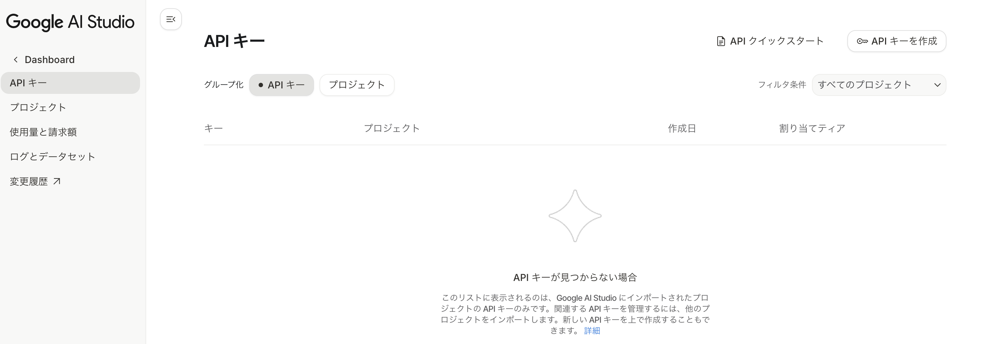
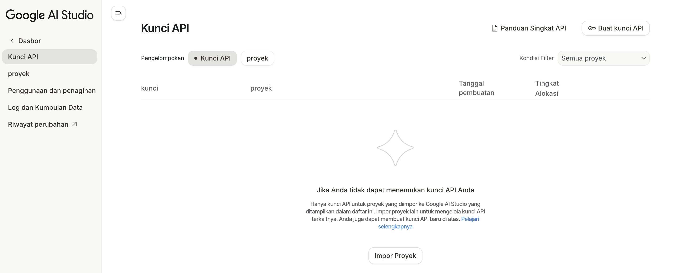
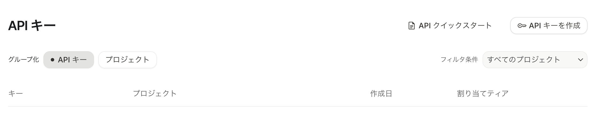
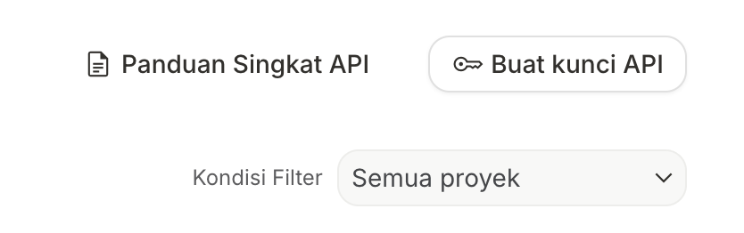
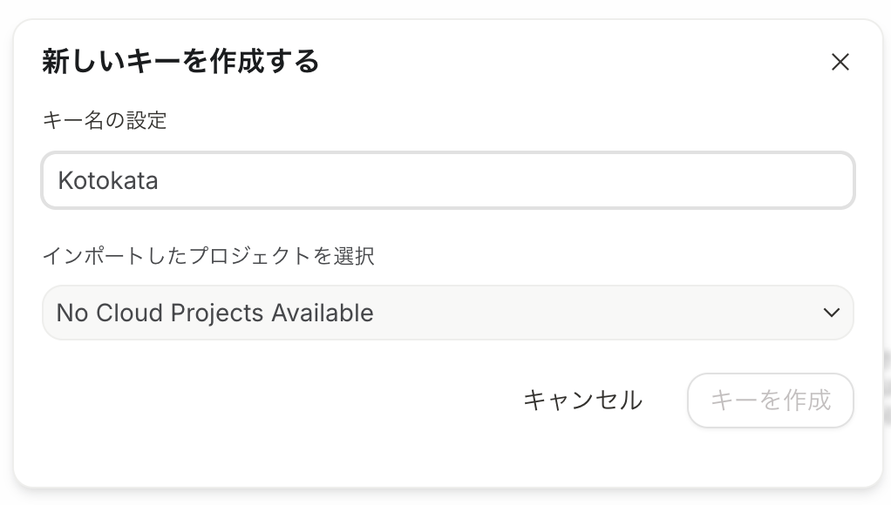
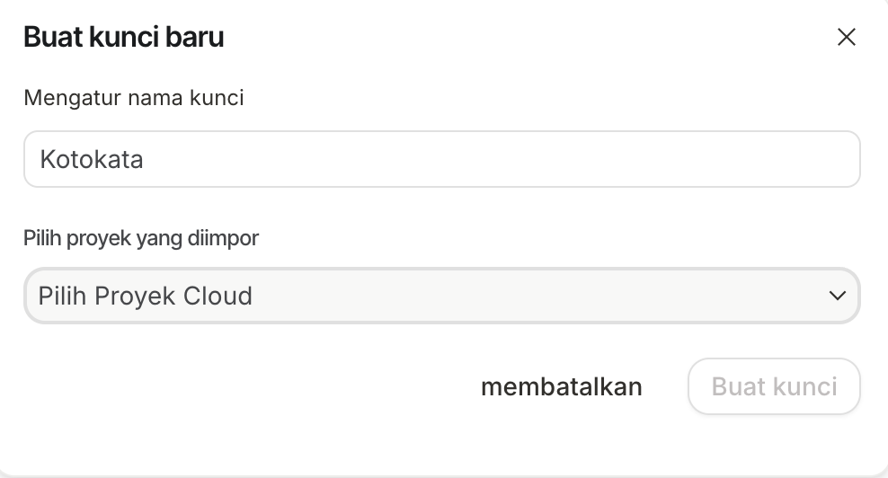
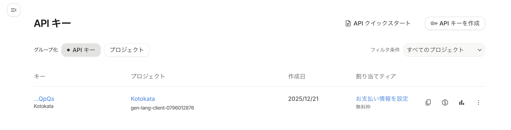
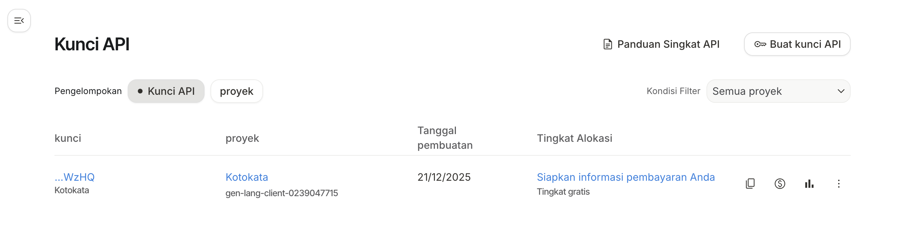
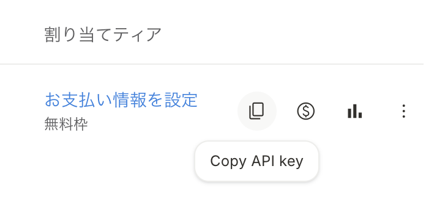
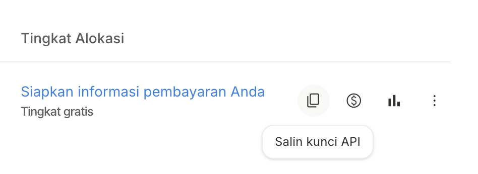

🔑 Google API キー取得ガイド 🔑 Panduan Kunci API Google
1. Google AI Studio にアクセス 1. Akses Google AI Studio
👉 Google AI Studio 👉 Google AI StudioGoogleアカウントでログインしてください。 Silakan masuk dengan akun Google Anda.
2. API キーを作成 2. Buat Kunci API
1. 「API キーを作成」ボタンをクリックします。 1. Klik tombol "Buat kunci API".
 2. プロジェクトが無い場合は、プロジェクトを作成します。 2. Jika tidak ada proyek, buat proyek baru.
   
3. プロジェクト名を入力して「プロジェクトを作成」をクリックします。
※プロジェクト名は自分がわかりやすければ何でも構いません。ここでは「Kotokata」としています。
3. Masukkan nama proyek dan klik "Buat proyek".
※Nama proyek bisa apa saja yang mudah Anda pahami. Di sini kami menggunakan "Kotokata".
4. プロジェクトが作成されたら、キー名を設定して「キーを作成」をクリックします。
※キー名も自分がわかりやすければ何でも構いません。ここでは「Kotokata」としています。
4. Setelah proyek dibuat, atur nama kunci dan klik "Buat kunci".
※Nama kunci juga bisa apa saja yang mudah Anda pahami. Di sini kami menggunakan "Kotokata".
5. 作成されたAPIキーをコピーします。キー名の横のコピーアイコンをクリックするか、「Copy API key」ボタンをクリックします。 5. Salin API key yang dibuat. Klik ikon salin di sebelah nama kunci atau klik tombol "Salin kunci API".
   6. コピーしたAPIキーを、Kotokataの設定画面の「Gemini API キー」にペーストしてください。 6. Tempelkan API key yang disalin ke "Kunci API Gemini" di layar pengaturan Kotokata.


⚠️ 重要な注意事項 ⚠️ Catatan Penting
• APIキーは秘密情報です。他人と共有しないでください
• 不要になったAPIキーは削除してください
• 無料枠でもKotokataは使用可能です。無料枠を利用している場合、課金されることはありません。
• 無料枠が無くなった方はカードを登録して有料枠で引き続き利用可能です。
• Kunci API bersifat rahasia. Jangan bagikan dengan orang lain
• Hapus kunci API yang tidak digunakan
• Kotokata dapat digunakan dengan kuota gratis. Jika menggunakan kuota gratis, tidak akan dikenakan biaya.
• Pengguna yang kehabisan kuota gratis dapat mendaftarkan kartu untuk terus menggunakan dengan kuota berbayar.